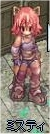
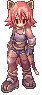
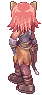
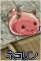
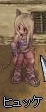
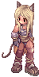
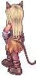
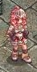
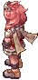
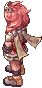

画像にリンクがはってあるものは、クリックすると別窓で大きめサイズが表示されます。
[ミスティ]
所在地；アカデミー教室棟Bの北東端（63,184）付近 |
|  |
[ネコリン]
所在地；アカデミー教室棟Bの北東端（63,184）付近 |
|  |
[ヒュッケ]
所在地；モロク（27,112） |
|  |
[ルーン]
所在地；1.アカデミー教室棟1階自習室（48,145） |
   |
back
(c) Gravity Co., Ltd. & Lee MyoungJin(studio DTDS). All rights reserved.
(c) GungHo Online Entertainment, Inc. All Rights Reserved.
当コンテンツの再利用（再転載・配布など）は、禁止しています。